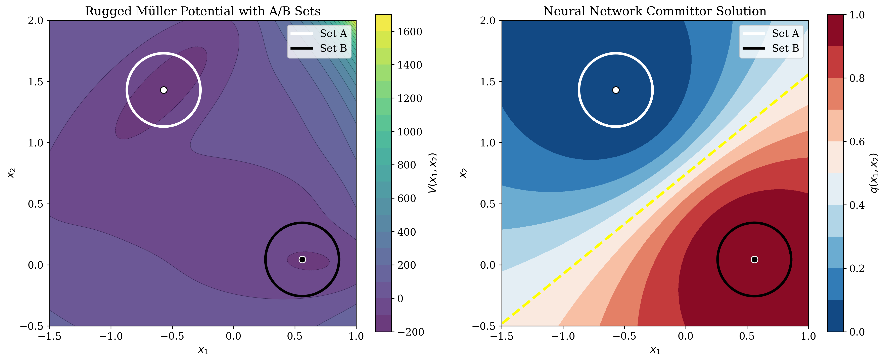
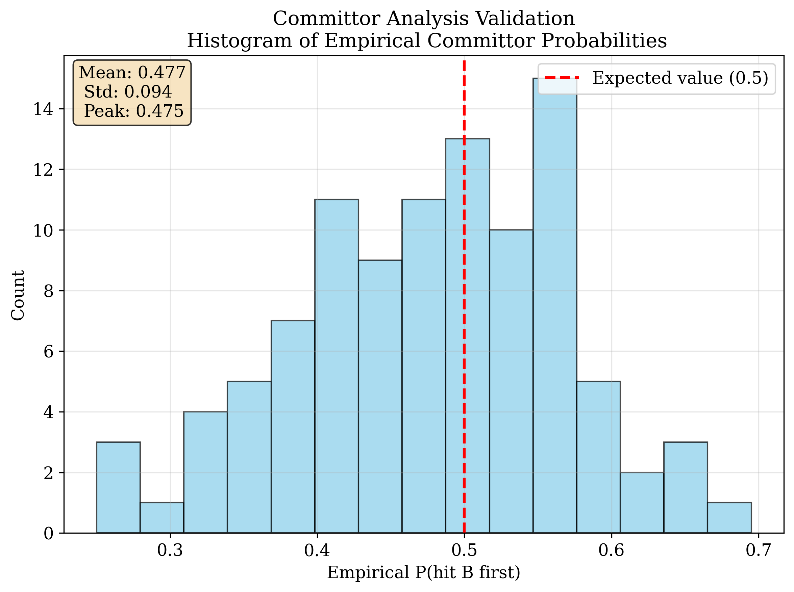

Variational Neural Network for the Committor
This project studies the committor equation for the rugged Muller potential with high-dimensional noise. The committor function is central in rare-event sampling and transition path theory because it gives the probability that a stochastic trajectory reaches target set \(B\) before set \(A\). Rather than discretizing the PDE on a large grid in ten dimensions, I build a neural solver around the variational formulation and evaluate it as a learning system with explicit training, sampling, and validation stages.
Main result: the learned \(q=0.5\) transition surface passes a Monte Carlo validation check, with the empirical histogram peaking at \(p \approx 0.477\), standard deviation \(0.094\), and \(68\%\) of sampled starts lying in \([0.4, 0.6]\).
Problem Setup
I consider overdamped Langevin dynamics in \(\mathbb{R}^{10}\):
\[ dX_t = -\nabla V(X_t)\,dt + \sqrt{2\beta^{-1}}\,dW_t, \qquad q(x)=\mathbb{P}_x \{ \tau_B < \tau_A \}. \]
The corresponding committor solves
\[ \nabla \cdot \left( e^{-\beta V(x)} \nabla q(x) \right)=0 \quad \text{on } \Omega_{AB}=\mathbb{R}^{d}\setminus(A\cup B), \qquad q|_{\partial A}=0,\; q|_{\partial B}=1. \]
The model uses the rugged Muller potential in the first two coordinates and a confining quadratic term in the remaining coordinates. The configuration is:
- Dimension \(d=10\), inverse temperature \(\beta=0.1\), corresponding to temperature \(T=10\).
- Set \(A\) centered at \((-0.57, 1.43)\) and set \(B\) centered at \((0.56, 0.044)\), both with radius \(0.3\) in the \((x_1, x_2)\)-plane and extended cylindrically in \(x_3,\dots,x_{10}\).
- Visualization window \((x_1, x_2)\in[-1.5,1.0]\times[-0.5,2.0]\).
- Ruggedized 2D potential \(V_{\mathrm{rugged}}(x_1,x_2)=V_{\mathrm{Muller}}(x_1,x_2)+0.3\cos(2x_1)\cos(2x_2)\).
- Full 10D potential \(V_{\mathrm{full}}(x)=V_{\mathrm{rugged}}(x_1,x_2)+\dfrac{1}{2\sigma^2}\sum_{i=3}^{10}x_i^2\) with \(\sigma=0.05\).
Variational Neural Network Formulation
The committor is represented by a neural ansatz that approximately enforces the boundary behavior through smoothed indicator functions \(\chi_A\) and \(\chi_B\):
\[ q(x)=F(x;\theta)=\big(1-\chi_A(x)\big)\Big(\big(1-\chi_B(x)\big)N(x;\theta)+\chi_B(x)\Big). \]
Here \(N(x;\theta)\) is a six-layer fully connected neural network with \(\tanh\) activations and 256 neurons per hidden layer. In practice, this turns the PDE solve into a trainable function-approximation pipeline whose objective is the Dirichlet energy
\[ \mathcal{I}[u]=\int_{\Omega_{AB}} e^{-\beta V(x)} \| \nabla u(x)\|^2\,dx. \]
To reduce the burden of sampling in energetically unfavorable regions, I draw training points from an importance distribution \(\rho_{T'}\propto e^{-\beta'V}\) with \(T'=20\) and \(\beta'=0.05\). This yields the Monte Carlo training objective
\[ \mathcal{L}(\theta)=\frac{1}{N}\sum_{i=1}^{N} \exp\big(-(\beta-\beta')V(x_i)\big) \| \nabla F(x_i;\theta)\|^2. \]
The model is trained for 3000 epochs using Adam with learning rate \(10^{-3}\), batch size 4096, and gradient clipping. These choices were useful for keeping optimization stable under a high-variance Monte Carlo objective. The overall setup avoids meshing the full ten-dimensional domain while still targeting the physically meaningful variational functional.
Boundary Behavior and Learned Solution
Because the boundary conditions are imposed through smooth masks rather than hard constraints, the neural approximation does not hit exactly \(0\) and \(1\) on the boundaries of \(A\) and \(B\). On held-out boundary samples, the reported averages are
\[ \overline{q}|_{\partial A}=0.156, \qquad \overline{q}|_{\partial B}=0.938. \]
This is a meaningful modeling detail rather than a cosmetic issue: it suggests a smoothed boundary layer induced by the architecture and training objective. In practice, the learned surface still captures the transition geometry well, and the committor-analysis validation below is the stronger test of whether the solution is placed correctly.

Rugged Muller potential and the learned committor. The yellow dashed curve marks the projected \(q=0.5\) isocommittor.

Histogram of empirical committor probabilities from trajectory launches near the predicted transition surface.
Committor Analysis Validation
To verify the learned transition surface, I first generate a candidate pool of 600,000 points and retain the 30,000 closest to the neural-network prediction of the \(q=0.5\) level set. A fast pre-screening stage launches 40 short Euler-Maruyama trajectories from each candidate and keeps only those with empirical committor values in \([0.45,0.55]\). From this filtered pool, I select 100 starting points for the full validation experiment. This creates a two-stage evaluation pipeline: cheap screening first, then more expensive simulation only on the most informative starts.
The starting points are selected using the two-dimensional projection of the transition curve, but the actual launches take place in the full ten-dimensional energy landscape. For coordinates \(x_3,\dots,x_{10}\), I sample independently from \(\mathcal{N}(0,\sigma^2)\) with \(\sigma=0.05\), consistent with the confining part of the full potential.
The full validation uses Euler-Maruyama time stepping with \(\Delta t=10^{-3}\), a maximum of 8000 steps, and stopping upon first hitting \(A\) or \(B\). For each of the 100 selected starts, I run 200 trajectories and estimate the empirical committor by the fraction that reach \(B\) first.
Results
The resulting histogram peaks at \(p=0.477\), with standard deviation \(0.094\). In addition, \(68\%\) of the empirical values lie in the interval \([0.4,0.6]\). The peak is slightly below the ideal value \(0.5\), but the discrepancy is modest and consistent with finite-sample variability. I also checked that the peak location remains stable when increasing the trajectory cap to 12,000 steps and when halving the time step to \(5\times 10^{-4}\), which gives a useful robustness check on the evaluation itself.
Overall, this project shows that the variational neural approach can recover a meaningful transition-state surface in a high-dimensional stochastic system, with Monte Carlo evidence supporting the placement of the learned \(q=0.5\) isocommittor. Beyond the PDE result itself, the project emphasizes architecture design, importance sampling, optimization stability, and validation against simulation rather than relying only on training loss. The most visible limitation is the smoothed boundary enforcement, which could likely be improved by sharper masks or more aggressive boundary-focused sampling.
Back to Projects